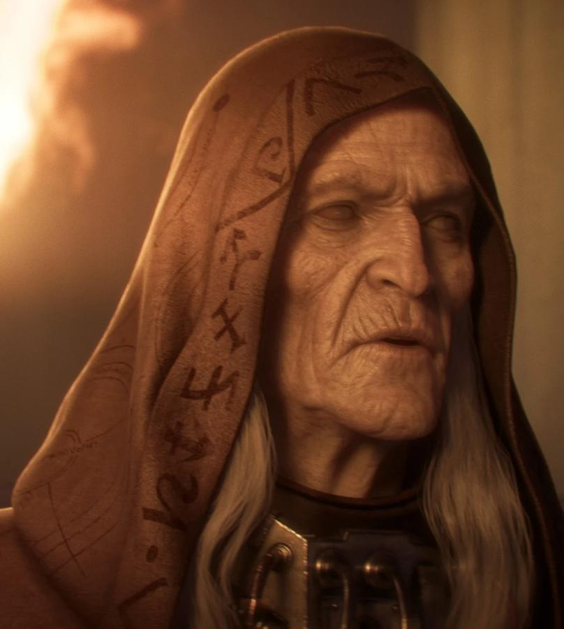

Malcador the Sigillite
| Malcador the Sigillite | |
|---|---|
 Malcador the Sigillite in the late years of the crusade, from a pict-capture Artwork © Games Workshop | |
| Sigillite | |
| Tenure | Unification Wars (late M29) – 014.M31 |
| First Lord of Terra and Regent of Terra | |
| Tenure | 798.M30 – 014.M31 |
| Successor | The High Lords of Terra |
| Allegiance | Imperium of Mankind |
| Role | Chief advisor and regent to the Emperor of Mankind |
| Born | Terra, before the Unification Wars; date unrecorded |
| Died | Final days of the Siege of Terra, 014.M31 |
| Known for | Governing Terra during the Great Crusade; founding of the Inquisition; defence of the Throne |
| Wargear | Staff topped by a flaming aquila |
Malcador the Sigillite was the first and greatest of the High Lords of Terra, and the Emperor's trusted regent and counsellor during the Great Crusade. A psyker of extraordinary power and an administrator of great ability, he governed Terra and the Imperium while the Emperor and his sons were abroad, and he died in the last days of the Siege of Terra after giving the last of his strength to the Emperor.[1] The Imperial Cult honours him as a saint, and the Inquisition treats him as its founder.
Early life
[edit]The records of Malcador's birth are fragmentary. Most agree that he was a native of Terra, born at some time before the Unification Wars, and that he came to the Emperor's attention as a youth of unusual psychic power. He was named the Sigillite for the sigils he created, wards that protected the Imperial Palace and its workings from the Warp's influence. He lived far longer than a normal man, though how he did so is disputed. The Ecclesiarchy holds that the Emperor sustained him, while the sealed records of the Inquisition indicate that he was long-lived by nature and sustained by his own psychic strength.[2]
Service to the Emperor
[edit]The Unification and the Great Crusade
[edit]
Malcador served the Emperor from the early days of the Unification. His skills lay in administration, in counsel and in the covert management of an empire. When the Emperor left Terra to lead the Great Crusade in 798.M30, he remained behind as regent, with the powers of the Emperor in all but name. He maintained the Palace and its workings, directed the flow of tithes and supplies to the armies, and managed the political affairs of the Imperium.[2]
During the Great Crusade Malcador created and led the Council of Terra, the body of civilian officials that supervised the Imperial administration. The Council was the forerunner of the High Lords of Terra, and Malcador was its First Lord. He dealt with the Imperium's internal threats, and the Imperial Truth, the doctrine of secular reason that suppressed religion, was in practice enforced by his staff. After the Triumph of Ullanor in 000.M31 the Council sat with the Emperor himself, and in 001.M31 Malcador attended the Council of Nikaea.[a][3]
Founder of the Inquisition
[edit]The Inquisition is traditionally said to have been founded by Malcador, at the Emperor's request, in the years of the Heresy (c. 006–014.M31)[b], to investigate and root out threats to the Imperium from within and from beyond. Imperial tradition holds that its first members were drawn from among the Sigillite's own household and from the Custodes, though the Inquisition itself has never confirmed this. In the Heresy the Inquisition was involved in the first investigations of the Chaos corruption of the Legions, and Malcador is said to have warned the Emperor of the rebellion.[1]

Horus Heresy
[edit]When Horus rebelled in 005.M31, Malcador took on the task of organising the Imperium's response. He directed the Emperor's loyalist forces, managed the diplomacy of the Imperium, and oversaw the fortification of Terra. He worked closely with Rogal Dorn, the Praetorian of Terra, whose Imperial Fists were charged with the defence of the Palace, and with Constantin Valdor of the Custodes, who commanded the Emperor's guard.[1]
During the Siege of 014.M31, the Emperor withdrew to the Webway beneath the Palace, and Malcador took on the heavy burden of sustaining the Emperor's work. His body, according to the newest records, was already failing. In the final days of the Siege he gave the last of his psychic strength to the Emperor, who was fighting Horus on the Vengeful Spirit, and died as the Emperor was wounded.[4][c]
Legacy
[edit]Malcador's death left the Imperium without a regent. His powers passed to the High Lords of Terra, and his office was never refilled. His successor as head of the Inquisition is, by tradition, unnamed; the Inquisition has operated through a council of Lords Inquisitor ever since.[5]
His memory is preserved in the Imperial Cult and in the rolls of the Inquisition. Pilgrims in the Palace's lower quarters still leave offerings in his name. In the Era Indomitus the primarch Roboute Guilliman has said that the Imperium lost in Malcador its only true administrator, and that the task he took up on his return was the one the Sigillite had left unfinished.[6]
Character and abilities
[edit]Malcador is described by those who knew him as a gaunt, hooded figure of great age, whose voice was soft and whose wit was dry. He disliked display and was seldom seen without his cloak and the staff topped by a flaming aquila. He was patient, ruthless in pursuit of what he judged necessary, and capable of long silences. The few Remembrancers who met him report that he was courteous to the point of disarming, and entirely unreadable.[7]
His psychic gifts were extraordinary even among the Imperium's greatest psykers. He was a master of wards and sigils, and the defences of the Palace, as well as the seals on the Imperial Dungeon, are credited to him. He was also an accomplished scholar, and the sealed records suggest that he had a deep knowledge of the Warp and of the Emperor's own work. Among the Custodes and the primarchs, his authority was respected as a reflection of the Emperor's own, and he commanded their obedience without ever asking for it.[2]
Relations with the primarchs
[edit]Malcador's relations with the primarchs were uneven. He admired Rogal Dorn and worked closely with him in the defence of Terra, and he valued the loyalty of Sanguinius and Roboute Guilliman. Others distrusted him: the primarchs of the more martial Legions regarded him as a bureaucrat and an agent of the Emperor's secrecy, and during the Great Crusade a number of them complained that his regency kept them in the dark about the Emperor's purposes. Records from the period suggest that Malcador was aware of the resentment and thought it acceptable.[1]
The Sigillite is also credited with seeing, earlier than most, the danger of the Legions' growing independence. It was on his counsel, according to tradition, that the Emperor entrusted the greater part of Terra's defence to the Imperial Fists and the Custodes, rather than to the Legions engaged on the frontier. If that is true, it may have saved the Palace.[1]
Timeline
[edit]| Date | Event |
|---|---|
| Before late M29 | Born on Terra; enters the service of the Emperor |
| Late M29 – 712.M30 | Counsellor to the Emperor through the Unification Wars |
| 739.M30 | The Treaty of Olympus binds Terra to the Mechanicum of Mars |
| 798.M30 | The Great Crusade departs; Malcador becomes Regent of Terra and First Lord of the Council of Terra |
| 000.M31 | The Emperor returns to Terra after the Triumph of Ullanor; the Webway project resumes beneath the Imperial Palace |
| 001.M31 | The Council of Nikaea |
| 004.M31 | Magnus the Red breaches the Webway workings; the Webway War begins |
| 005–006.M31 | Isstvan III and the Drop Site Massacre; Malcador directs the Imperium's response with Rogal Dorn and Constantin Valdor |
| c. 006–014.M31 | Recruits the agents later remembered as the first Inquisitors[d] |
| 014.M31 | The Siege of Terra; Malcador sustains the Golden Throne and dies in its final days |
See also
[edit]Notes
[edit]- ^ Malcador's presence at Nikaea is given in the Remembrancer accounts of the council; his role there is not recorded.
- ^ Date estimated from the sequence of events.
- ^ Earlier Imperial records had Malcador dying before the siege ended and the Emperor's duel with Horus taking place without his aid. The account of the Regent's scribes, which is now accepted, places his death at the end of the siege and states that he gave strength to the Emperor in his last hours.
- ^ Date estimated from the sequence of events.
References
[edit]- ^ a b c d e Swallow, James. Nemesis (novel). Black Library, pg. 47. Wraight, Chris. The Sigillite (Audio Book). Black Library.
- ^ a b c Haley, Guy. Wolfsbane (novel). Black Library, Chs. 4-9. Swallow, James. The Buried Dagger (novel). Black Library, Chs. 6-7.
- ^ Swallow, James. The Flight of the Eisenstein (novel). Black Library. Dembski-Bowden, Aaron. The First Heretic (novel). Black Library.
- ^ Thorpe, Gav. Deliverance Lost (novel). Black Library. Swallow, James. Garro: Oath of Moment (Audio Book). Black Library.
- ^ Swallow, James. Garro: Legion of One (Audio Book). Black Library. McNeill, Graham. Vengiful Spirit (novel). Black Library.
- ^ Golding, Laurie. Malcador: First Lord of the Imperium (Audio Book). Black Library. Codex: Grey Knights (5th Edition), pp. 6-7. Games Workshop.
- ^ Horus Heresy Chapbook (Anthology), "The Lightning Tower" by Dan Abnett. Bligh, Alan. The Horus Heresy - Book One: Betrayal (Forge World Series). Black Library, pg. 16.